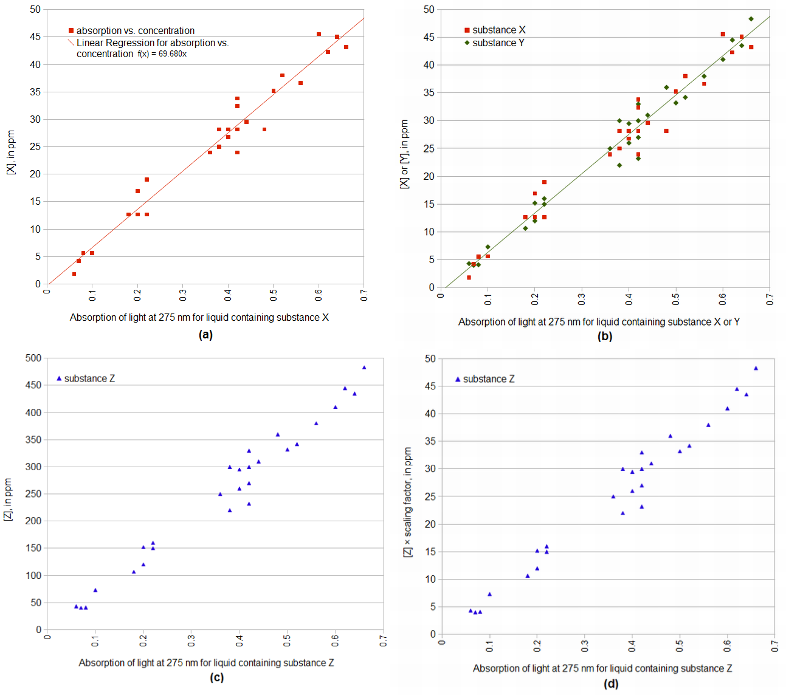

Figure 2. Theoretical relative concentration of isomerized alpha acids in water, as a function of time and temperature.
Figure 2. Theoretical relative concentration of isomerized alpha acids in water, as a function of time and temperature.
This blog post is excessively long. In order to make it somewhat more manageable, here are links to the various sections:
1. Introduction
2. Definitions of IBUs
2.1 IBU Definition from the American Society of Brewing Chemists (ASBC)
2.2 IBU Definition from Val Peacock
3. A General Description of Factors Affecting IBUs
3.1 Concentration of Isomerized Alpha Acids (IAA)
3.2 Accounting for Post-Boil Utilization
3.3 Adjustments to the Concentration of Isomerized Alpha Acids
3.4 A Revised IBU Formula for nonIAA Components
3.4.1 Hop Pellets
3.4.2 Oxidized Alpha Acids
3.4.3 Oxidized Beta Acids
3.4.4 Polyphenols
3.4.5 Solubility of nonIAA Components
3.5 The Impact of Dry Hopping on IBUs
4. Available Data, Parameter Estimation, and Results
4.1 Overview
4.2 Sources of IBU Data
4.2.1 Peacock Hop-Storage Conditions
4.2.2 Personal Experiments
4.3 Parameter Estimation and Results
5. Discussion of Results
6. Summary
References
1. Introduction
This blog post presents a summary of some of the factors that affect the measurement of International Bitterness Units (IBUs) (or simply "Bitterness Units" (BU) if you're already international). In order to provide as cohesive a summary as possible, I provide both qualitative and quantitative descriptions of these factors. If you want to get a better understanding of what components contribute to an IBU value, how the amount of hops used, wort pH, or krausen may impact IBUs, or how late hopping may decrease the relative proportion of isomerized alpha acids, then this might be the blog post for you. I've implemented all of the formulas described here in a model of IBU prediction called SMPH; this model is available at my GitHub page.
The more I learn about hops, the more complex the topic becomes, with a seemingly never-ending level of detail. If you're familiar with Alice In Wonderland, then this blog post goes only one level down the IBU rabbit hole, and it looks briefly through a number of open doors at that level without going through them. In other words, there's a lot of research, chemistry, opinions, known unknowns, unknown unknowns, and contradictions that I'm not going to touch on. You can also think of this post as an impressionist painting: if you stand back far enough, you should be able to see a complete picture. If you look too closely and focus too much on the details, however, things that make sense in their relationship to other things may become, when isolated from the larger context, meaningless splotches. The many details are not as important as the bigger picture; the details are there to provide support. Feel free to focus on what interests you.
The IBU measurement itself is not always highly regarded. I've heard some people claim that the IBU is basically meaningless. However, the correlation between measured IBUs and perceived bitterness for 91 commercial beers with a trained sensory panel with 19 members has been measured at 0.86 [Hahn, p. 50]. A correlation of 0.86 is considered a "strong" correlation [Taylor, p. 37], and so the IBU is actually meaningful and strongly correlated with perceived bitterness [also, Priest and Stewart, p. 266]. While the perception of bitterness is not linear at higher IBU values, a simple mapping can translate IBU values into a linear perceptual scale, and vice versa [Hahn, pp. 48-50]. Bitterness may have different qualities not captured by the IBU measurement [Peacock, p. 163], and the correlation between IBU levels and bitterness may not hold up under every circumstance (e.g. with extremely high rates of dry-hopping [Maye et al., p. 25]). On the other hand, it is a universally-known and (sometimes grudgingly) accepted quantitative measurement, and there is no other measurement of beer that has a better correlation with perceived bitterness. This post doesn't touch on the pros and cons of the IBU, but, accepting it at face value, tries to break it down into various components and relationships.
This post provides a summary of a large number of sources, including Val Peacock's article "The International Bitterness Unit, its Creation and What it Measures" in Hop Flavor and Aroma (ed. Shellhammer); Mark G. Malowicki's Masters thesis, Hop Bitter Acid Isomerization and Degradation Kinetics in a Model Wort-Boiling System; Michael L. Hall's article "What's Your IBU" in Zymurgy (1997); Michael J. Lewis and Tom W. Young's chapter "Hop Chemistry and Wort Boiling" in Brewing; Mark Garetz' article "Hop Storage: How to Get - and Keep - Your Hops' Optimum Value" in Brewing Techniques, and his book Using Hops; Stan Hieronymus' book For the Love of Hops; J. S. Hough et al.'s Malting and Brewing Science (volume 2); and many other theses, articles, and internet sources. If you look at the bibliography, you'll see many publications produced under the guidance of Thomas Shellhammer. I've tried to cite appropriately, and I've put the full bibliography at the bottom of this post. I've omitted a lot of interesting details from these sources, in order to maintain a more focused narrative.
2. Definitions of IBUs
2.1 IBU Definition from the American Society of Brewing Chemists (ASBC)
Because of the complexity of hops and IBUs, it's probably a good idea to start at a high level of description, which is deceptively simple but not very informative: An IBU is a measurement of the amount of absorption of light at 275 nm (abbreviated as A275nm) in a liquid, multiplied by 50. The liquid in this case is not just any liquid, but beer that has been combined with twice as much iso-octane (TMP), diluted in octyl alcohol and hydrochloric acid [American Society of Brewing Chemists], and emulsified; i.e. "acidified beer." In mathematical form, we can say:
| IBU = A275nm(beer) × 50 | [1] |
This measurement has been found to correlate well with the perception of bitterness in beer. As Lewis and Young state, "the value for [the IBU] is a good representation of the sensory bitterness of beer" [Lewis and Young, p. 266]. Why does this correlation exist? There are three intertwining factors: (1) the absorption of light at a particular (ultraviolet) frequency (275 nm) through a sample, (2) the concentration of certain substances in this acidified beer that absorb light at this frequency, and (3) the perception of bitterness that is associated with these substances. This blog post pretty much ignores the first and third factors, assuming that it is predominately those substances that absorb more light at this frequency that have a bitter taste in beer. What this post focuses on, then, is the second factor: the concentration of substances in acidified beer that absorb light at 275 nm. In the development of the IBU measurement, there was a deliberate decision to include not only the bitter isomerized alpha acids (abbreviated here as IAA) that are produced during the boiling of hops in wort, but also other "bittering substances" that contribute to the perception of bitterness [Peacock, p. 159], and which happen (by happy circumstance) to absorb light at 275 nm (as isomerized alpha acids do).
The amount of absorption of light at 275 nm by a sample of acidified beer, multiplied by 50 (or, more precisely, 51.2), was found to provide a good approximation to the concentration of isomerized alpha acids in typical beer of the 1950s and 1960s (when the IBU measurement was developed) [Peacock, p. 161]. So, we can say:
| [IAA]beer1960s = A275nm(beer1960s) × 51.2 | [2] |
If one has a solution that contains only isomerized alpha acids and no other substances that absorb light at 275 nm, the concentration of IAA can be estimated with the following equation [Peacock, p. 161]:
| [IAA]IAAsolution = A275nm(IAAsolution) × 69.68 | [3] |
Figure 1(a) shows hypothetical (i.e. completely made up) data that represent absorption of light at 275 nm on the horizontal axis and the measured concentration of a substance X on the vertical axis. (The data are fake, but the figure will hopefully be useful to illustrate some concepts.) In this case, a line can be fit through the data to predict concentration given absorption: concentration = (69.68 × absorption) + 0. The offset of this line is 0 (meaning that the predicted value for an absorption of 0 is a concentration of 0), and so we can ignore the offset, characterizing the relationship with a single multiplication factor (69.68). We'll come to Figures 1(b), 1(c), and 1(d) shortly.
 Figure 1. Concentration as a function of light absorption for various circumstances. (a) Concentration of X is approximated by light absorption multiplied by 69.68. (b) Both X and Y can have their concentration predicted by multiplying absorption by 69.68. (c) The concentration of substance Z is predicted by light absorption multiplied by 696.8 (10 × X). We can model the concentration of Z multiplied by a scaling factor (0.10) as a function of absorption, which allows us to treat it like substances X and Y (with a multiplication factor of 69.68).
2.2 IBU Definition from Val Peacock
This background leads us to a second high-level description of IBUs: an IBU is an estimation of the concentration of isomerized alpha acids in typical 1960s beer, based on the combined concentration of isomerized alpha acids and other bittering substances in beer, multiplied by 5/7 [Peacock, p. 161]. In mathematical notation:
| [IAA]beer1960s ≈ IBU = 5/7 × ([IAA]beer + [nonIAA]beer) | [4] |
Why is there the multiplication by 5/7 in Equation [4]? We can derive it from Equations [2] and [3] if we make three assumptions: (1) For substance X in an appropriate solution, if the absorption of light at 275 nm is zero (A275nm(X) = 0), then the concentration of X is zero ([X] = 0). (2) There is a linear relationship between the absorption of light at 275 nm and the concentration of relevant bittering substances in beer, at least within the range of interest. (3) The linear relationship between absorption and concentration is the same for all relevant substances in beer, namely 69.68. The first two assumptions were made by the 1967 Analysis Committee of the European Brewery Convention that developed the unit that became the IBU [Peacock, p. 160-161], so they seem reasonable. The third assumption is not necessarily true, but we can modify it for those cases where it isn't true, so let's assume it's true for now.
Let's start by looking at two beers that have the same amount of light absorption at 275 nm (i.e. the same level of bitterness): one beer is a (cryogenically preserved) 1960s beer with this bitterness level, and the other beer is something you just brewed:
| A275nm(beer1960s) = A275nm(beer) | [5] |
We can then multiply the numerator and denominator of the left-hand side by 51.2, and multiply the numerator and denominator of the right-hand side by 69.89, and the relationship still holds:
| (A275nm(beer1960s) × 51.2) / 51.2 = (A275nm(beer) × 69.68) / 69.68 | [6] |
| (A275nm(beer1960s) × 51.2) / 51.2 = (A275nm(IAA + nonIAA) × 69.68) / 69.68 | [7] |
| [IAA]beer1960s / 51.2 = [IAA + nonIAA]beer / 69.68 | [8] |
| [IAA]beer1960s = (51.2 / 69.68) × ([IAA]beer + [nonIAA]beer) | [9] |
| [IAA]beer1960s ≈ IBU = 5/7 × ([IAA]beer + [nonIAA]beer) | [4] = [10] |
Now let's revisit the assumption that the concentration of nonIAA substances can be predicted from light absorption with a scaling factor of 69.68. For the sake of explanation, let's consider a hypothetical case where nonIAA substances have a scaling factor of 696.8, ten times that of IAA, as illustrated in Figure 1(c). We can then plot the concentration of nonIAA substances divided by 10 (i.e. [nonIAA]/10) as a function of light absorption (Figure 1(d)), and return to our desired IAA scaling factor of 69.68. We then just need to note in our equation that we're no longer modeling the actual concentration of nonIAA, but the scaled concentration [nonIAA]beer × scalenonIAA:
| [IAA]beer1960s ≈ IBU = 5/7 × ([IAA]beer + ([nonIAA]beer × scalenonIAA)) | [11] |
| [IAA]beer1960s ≈ IBU = 5/7 × ([IAA]beer + (([nonIAA1]beer × scalenonIAA1) + ([nonIAA2]beer × scalenonIAA2) + ([nonIAA3]beer × scalenonIAA3))) | [12] |
The IBU value was designed to be approximately equal to the concentration of isomerized alpha acids (in ppm), given the boiling time, alpha acid levels, and storage conditions of 1960s beer and hops [Peacock, p. 161]. At that time, hops seem to have been stored for long periods of time at cellar or room temperature without special packaging [Peacock, p. 160 and 162]. As Peacock explains, for a typical beer made from typical hops with a typical age and duration of hop boiling, the relative concentration of IAA to all bittering substances (IAA + nonIAA) was about 5/7, or about 71%. In more recent times, it is much more likely that hops are stored at freezing temperatures or with less oxygen for less time, which makes the relative concentration of IAA (with a typical 1960s hop boiling time) much higher. So, an IAA concentration of 14 ppm from a 60-minute boil might yield an IBU value closer to 12. On the other hand, it is also common now to add a lot more hops much closer to flameout, which increases the relative concentration of nonIAA components in the beer (compared with longer boiling times), as discussed below.
3. A General Description of Factors Affecting IBUs
The preceding descriptions of IBUs actually helped us. Now we know that there are only three things we need to worry about when modeling IBUs: the concentration of isomerized alpha acids (IAA), the concentrations of other bittering substances (nonIAA), and the scaling factors for the nonIAA substances. Thanks to Peacock's formulation, we've moved from the absorption of light at 275 nm (which is very difficult for a homebrewer to measure or predict) to the concentrations of different substances (which we can approximate). This section looks at these three items in more detail.
Before getting too far into this section, this might be a good place to define some terms related to alpha acids and beta acids. Alpha acids are part of the soft resins in the hop lupulin gland, and the alpha acids contain humulone, cohumulone, and adhumulone [Oliver, p. 34]. Older work may refer to all alpha acids as humulones [Oliver, p. 462]. Humulone is the most prevalent of the alpha acids, and the "chemistry of the other iso-alpha acids is practically identical to that of the isohumulones" [Verzele and De Keukeleire, p. 88], so the terms "humulone" and "iso-humulone" can usually be considered generally equivalent to the terms "alpha acid" and "isomerized alpha acid," respectively (to the chagrin of Verzele and De Keukeleire [p. 89]). The oxidized alpha acids contain humulinone as their most important component [Algazzali, p. 13]. The soft resins also contain beta acids, which are also called lupulones [Oliver, p. 462]. The beta acids are composed of colupulone, adlupulone, lupulone, and prelupulone [Oliver, p. 260]. The oxidized beta acids contain mostly hulupones [Algazzali, p. 15]. The oxidized form of colupulone is called cohulupone [Stevens and Wright, p. 496].
3.1 Concentration of Isomerized Alpha Acids (IAA)
Mark Malowicki [Malowicki] provides a model for both the conversion of alpha acids into isomerized alpha acids and the subsequent conversion of isomerized alpha acids into other "uncharacterized degradation products", as functions of time and temperature (with pH 5.2 and an alpha-acid concentration of 80 ppm). (These degradation products include humulinic acid, isobutyraldehyde, and iso-hexenoic acid [Hough et al., p. 480].) Malowicki describes the conversion of alpha acids into isomerized alpha acids as a first-order reaction following an Arrhenius equation with a temperature-dependent rate constant k1:
| k1(T) = 7.9×1011 e-11858/T | [13] |
| [AA]wort = [AA]0 e-k1(T)t | [14] |
| k2(T) = 4.1×1012 e-12994/T | [15] |
Both Malowicki [Malowicki, p. 27] and Yarong Huang et al. [Huang 2013] show how to combine these equations into a single model of the cumulative concentration of isomerized alpha acids as a function of time and temperature:
| [IAA]wort = [AA]0 (k1(T)/(k2(T) − k1(T))) (e-k1(T)t − e-k2(T)t) | [16] |
Figure 2. Theoretical relative concentration of isomerized alpha acids in water, as a function of time and temperature.
This plot at 100°C (212°F) looks reassuringly similar to the utilization of alpha acids in the Tinseth equation for predicting IBUs [Tinseth]; the scale is different, and the shape is somewhat different, but the general trend at boiling is similar.
Equation [16] relies on the initial concentration of alpha acids when hops are added to the boil, which we can determine from the volume of wort (in liters), the weight of hops added (in grams), and either (a) the measured percentage of alpha acids at the time of the boil or (b) the measured percentage of alpha acids at the time of harvest and the degradation of alpha acids over time. These values will give us the initial concentration of alpha acids in wort (in ppm):
| [AA]0 = AA% × W × 1000 / V | [17] |
Is V the volume at the beginning, middle, or end of the boil? While [AA]0 indicates the initial level of alpha acids (when hops are added to the boil), we don't have a factor that adjusts for volume changes between that time and the end of the boil. If we did have such a factor, it would account for the difference between these two volumes, since the final concentration of isomerized alpha acids is determined by the post-boil volume (before racking losses that reduce the volume but don't change the concentration). Instead of having a separate factor and applying it explicitly, we can specify that V is the post-boil volume, and the numbers will come out the same as if we started with some other volume and then accounted for evaporation. In short: V should be post-boil, room-temperature wort volume (ideally not including the volume of hops in the wort).
If we don't know the alpha acid rating of the hops when we brew our beer, we can use the initial (harvest) estimate with a model of how alpha acids degrade over time, developed by Mark Garetz [Garetz article] to estimate the alpha-acid rating for hop cones:
| AA% = AAharvest × AAdecayfactor = AAharvest × 1/ek×TF×SF×D | [18] |
One complicating factor in getting a reliable estimate of AA% is that the alpha acids are not evenly distributed throughout the hop cone, and some cones contain more alpha acids than others. As Verzele and De Keukeleire state, "there are easily differences up to 15 − 20% in alpha acids content between and within bales of a single hop delivery. ... Since inhomogeneity is to be expected, a reasonable estimate for the average content of the hops lot can only be obtained by sampling at various positions" [Verzele and DeKeukeleire, p. 331]. Therefore, if you only use an ounce or two of well-preserved hops in your boil, the actual concentration of alpha acids in the wort can be up to 20% different from the expected concentration based on the alpha-acid rating on the package.
3.2 Accounting for Post-Boil Utilization
It's clear that at flameout, the wort (unfortunately) does not instantaneously cool to pitching temperature. According to Equation [16], there can still be measurable isomerization even at 158°F (70°C). Therefore, as the wort cools after flameout, there can be a significant increase in the concentration of isomerized alpha acids. I've suggested in a previous blog post that we can model this post-flameout increase in IBUs by multiplying the change in IAA concentration at time t by a temperature-dependent factor at t (with a factor of 1.0 for boiling), and then integrating the instantaneous values over time to arrive at a cumulative IAA concentration that reflects post-flameout temperature changes. In the current framework, we have a function (Equation [16]) that is already dependent on temperature, so we can take the derivative with respect to time, compute the instantaneous change in concentration at time t and temperature T, and then integrate over time t to arrive back at total concentration of IAA. While the temperature is boiling, we will arrive at the same answer as if we didn't take the derivative and then integrate. As the kettle cools after flameout, we change the rate constants to reflect the lower rate of isomerization. This can be implemented in less than 20 lines of programming code, and I've since noticed that Malowicki suggests this very approach, saying "for conditions in which the rate constants change with a changing temperature profile, the concentrations of iso-humulones formed during kettle boiling can be calculated using [equations] which define the differential change in alpha-acid, iso-alpha-acid, and degradation product concentrations with respect to time" [Malowicki, p. 27].
We can take the derivative of Equation [16] in order to compute the change in IAA concentration at time t:
| d([IAA]wort)/dt = [AA]0 (k1/(k2–k1)) (k2e-k2t-k1e-k1t) | [19] |
| d([AA]wort)/dt = -k1 [AA]wort | [20] |
| d([IAA]wort)/dt = k1 [AA]wort - k2 [IAA]wort | [21] |
A model of how temperature decreases after flameout is presented in a blog post "Predicting Wort Temperature After Flameout". This model is described by Equations [22a], [22b], and [22c]. In these equations, the parameter T is temperature (in degrees Kelvin), t is time after flameout (in minutes), b is the rate constant that describes how quickly the temperature decreases, effectiveArea is the "effective" area through which steam ventilates, surfaceArea is the surface area of wort exposed to air (in square centimeters), openingArea is the area of the opening in the kettle (in square centimeters), and volume is the wort volume (in litres). This rate of natural cooling is primarily influenced by (a) the release of steam, which is in turn influenced by the wort volume, surface area of wort exposed to air, and size of the opening in the kettle through which steam can escape, and (b) radiation of heat from the kettle. Other factors, such as ambient temperature and kettle material, are of much lesser significance and can be ignored.
| T = 53.70 × exp(-b × t) + 319.55 | [22a] |
| b = (0.0002925 × effectiveArea / volume) + .00538 | [22b] |
| effectiveArea = (surfaceArea × openingArea)0.5 | [22c] |
integrationTime = 0.001;
effectiveArea = sqrt(surfaceArea * openingArea);b = (0.0002925 * effectiveArea / volume) + .00538;
AA = AA0;
IAA = 0.0;
time = 0.0;
while (time <= totalTime) {
if (time <= boilTime)
temp = 373.15;
else
temp = 53.70 × exp(-b * (time-boilTime)) + 319.55;
k1 = 7.9 * pow(10,11) * exp(-11858.0/temp);
k2 = 4.1 * pow(10,12) * exp(-12994.0/temp);
dAA = -1.0 * k1 * AA;
AA = AA + (dAA * integrationTime);
dIAA = (k1 * AA) - (k2 * IAA);
IAA = IAA + (dIAA * integrationTime);
time = time + integrationTime;
}
where the integration time of 0.001 (called integrationTime) is sufficient for accuracy to at least two places past the decimal point; a larger value like 0.01 will speed things up and still have very good accuracy. The variable effectiveArea is the square root of the surface area of the wort and the area of the kettle opening. The variable b is the rate constant for temperature decay. The variable AA0 is the initial concentration of alpha acids, in ppm (see Equation [17]). Here, AA is the total concentration of AA, or [AA], after time time (in minutes). Likewise, IAA is the total concentration of IAA, or [IAA], after time time. The value of totalTime is the length of the boil in minutes (boilTime) plus any time after the boil when isomerization might be happening. A loop is set up to evaluate (and integrate) all time points from 0.0 to totalTime in increments of 0.001 minutes, with time representing the current time instant. (The '{' and '}' symbols define the beginning and end of what is evaluated during each time point.) The temp variable is temperature at the current time, in Kelvin. The k1 and k2 variables are the rate constants from Equations [13] and [15]. The variable dAA is the derivative of [AA], or change in [AA] per minute, as defined in Equation [20]. Likewise, the variable dIAA is the derivative of [IAA], or change in [IAA] per minute, as defined in Equation [21]. The pow() function raises the first argument to the power of the second argument; the exp() function computes the constant e (2.718...) to the power of its argument. After finishing the loop, IAA will equal the total concentration of isomerized alpha acids, accounting for both time and (post-flameout) temperature.
3.3 Adjustments to the Concentration of Isomerized Alpha Acids
Now we know how to measure the concentration of IAA in wort during the boil under ideal conditions. We can use this as the basis for a quantitative model of IBUs. What we need next is a way to describe the differences between ideal laboratory conditions and (home) brewery conditions. One difference is a loss of available alpha acids when the amount of alpha acids added to the wort exceeds its solubility limit, as described below ("losses as a function of hopping rate"). Other differences can usually be described as losses of IAA that are produced in the boiling wort but never make it into the pint glass: losses that are correlated with high wort gravity, other losses during the boil, and losses due to wort turbidity, wort pH, fermentation, flocculation, krausen deposits, filtration, finings, and aging. We'll look at each of these briefly in this section. In general, if we have a loss of x%, the loss factor will be (1 - (x%/100)); for example, a loss of 10% becomes a loss factor of 0.90. If condition A is x% more efficient than condition B, then the loss factor for condition B is (100/(100+x%)). For example, if A is 10% more efficient than B, then B has a loss factor of 0.91 compared with A.
Before getting into too much detail, this is a good place to define a high-level term, "utilization." Hop utilization, U, is the amount of isomerized alpha acids in the finished beer divided by the amount of alpha acids added to the kettle, and then multiplied by 100 to convert to percent [e.g. Lewis and Young, p. 266]:
| U = 100 × (isomerized alpha acids in beer) / (alpha acids added to kettle) | [23] |
Isomerization as a Function of Temperature: According to Malowicki's equations (above), a decrease in temperature (e.g. below 100°C) will decrease utilization. If you live at a high enough altitude, your wort will boil at less than 100°C, in which case you might want to adjust k1 and k2 in Equations [13] and [15]. Post-flameout temperature dependencies are discussed above in Section 3.2. (Lewis and Young, Palmer, Hieronymus, and others note that the intensity of the boil affects utilization [Lewis and Young, p. 266; Palmer p. 55; Hieronymus, p. 188], which is presumably related to wort temperature.)
Isomerization Differences Based on Form of the Hops: The impact of hop pellets on IBUs, compared with hop cones, is discussed more in Section 3.4.1. Hop cones can be added to the boil either loose or in a coarse mesh bag. Garetz says that hops kept in a mesh bag during the boil have lower utilization than loose hops, with a correction factor of 0.91 for loosely-stuffed hops and 0.83 for a full bag [Gartez book, p. 141]. I looked at the effect of a mesh bag vs. loose hops on measured IBUs, and found no significant difference. Marshall Schott at Brülosophy also looked at bagged vs. loose hops, and found 25 IBUs for the bagged hops and 27 IBUs for the loose hops [Schott]. While this difference is not significant, the ratio of 0.926 (25/27) is close to Garetz's correction factor of 0.91. In short, it's not clear if hop cones in a mesh bag really do have lower utilization. For the model being developed, I'll assume that bagged hops have the same utilization as loose hops.
Isomerization as a Function of Kettle Size and/or Geometry: The kettle size and/or kettle geometry may also impact utilization [Daniels, p. 78; Fix, p. 47]. As Hieronymus says, "larger kettles are more efficient, and the difference between a five-gallon homebrew system and even a 10-barrel (310-gallon) commercial brewery is startling" [Hieronymus, p. 188]. There are other claims, however, that recipes should scale linearly with kettle size, indicating no impact on utilization [e.g. Spencer]. If there is an impact, the reason for the change in utilization is not clear to me, especially since Malowicki used only tiny volumes of wort (12 ml) [Malowicki, p. 19] and obtained high utilization rates at boiling (see Figure 2). The only quantitative description I've seen of this impact on utilization is in an article on BeerSmith, which says that "Hop utilization is much higher at craft brewing scales, because large boils simply extract more bitterness. ... The Hop Utilization Factor ... can easily be 125%, 150% or possibly more for a multi-barrel brewing system" [Smith]. I think that the observed increase in utilization with kettle size is actually a reflection of longer times between flameout and cooled wort, which is already accounted for in the current model with post-boil utilization. In short, kettle size (or wort volume) may (or may not) have an impact on utilization, with a scaling factor ranging from 1.0 (no impact) to 1.5 (large impact). Because of the difficulty of reconciling Malowicki's use of tiny volumes and resulting high utilization, and because in numerous experiments I've conducted with different volumes of wort (see Section 4.2.3) that show no impact of volume or boil-kettle size on IBUs, I believe that the size of the wort volume or boil kettle has no impact on utilization.
Losses as a Function of Hopping Rate: The relative amount of hops (and therefore also the relative amount of alpha acids) in the wort affects utilization. As Lewis and Young say, "a high hopping rate reduces extraction efficiency" [Lewis and Young, p. 267]. Daniels phrases this as "simply adding more and more hops does not produce a linear increase in the amount of bitterness produced" [Daniels, p. 85]. Fix also notes that the utilization rate is affected by hop concentration [Fix, p. 47]. Hough et al. say that "hops are utilized more efficiently at low rates" [Hough et al., p. 489]. Maule determined that reduced utilization at higher hop rates can only be accounted for by the "difficulty with which [isomerized alpha acid] enter[s] solution when wort [is] boiled with large amounts of [alpha acid]" [Maule, p. 290], and that "only a small portion of the resin present on the hot break ... can be claimed to be truly adsorbed" [Maule, p. 289].
Garetz provides a quantitative model of the relationship between amount of hops and utilization. He proposes a hopping-rate correction factor (also described by Hall and Daniels) that depends on volume and "desired IBU" to determine the weight of hops needed [Garetz book, p. 137; Hall, p. 63; Daniels, p. 86]. I used this equation when I was initially developing this blog post. However, after some difficulty fitting the IBU model developed here with available data, and after further experimentation, I concluded that Garetz's correction factor underestimates the effect of alpha acid concentration on utilization.
A better fit to the data available to me can be obtained by using a "soft" limit on alpha-acid solubility. In this model, the solubility of alpha acids rises gradually above 240 ppm with increasing [AA]0, according to the equations
| slope = log(1 − ([AA]limitMin / [AA]limitMax)) / [AA]limitMin | [24] |
| [AA]limit = [AA]limitMax × (1 − exp(slope × [AA]0)) | [25] |
Losses Due to Wort Gravity: Utilization decreases with increasing wort gravity, at least at higher gravities [e.g. Lewis and Young, p. 266; Hieronymus, p. 188; Hall, p. 62; Daniels, p. 78; Palmer, p. 55; Malowicki, p. 44; Garetz book, p. 130; Hough et al., p. 489; Kappler, p. 334]. As Lewis and Young state, "iso alpha acids react with proteins of wort whence they are partially removed as trub or hot break" [Lewis and Young, p. 266]. As the gravity increases, the concentration of wort proteins increases, implying a greater loss of isomerized alpha acids with increasing gravity. Kappler found greater losses of isomerized alpha acids at higher gravities when adding (already) isomerized alpha acids to the boil [Kappler, p. 335], indicating that higher gravity causes more isomerized alpha acids to bind with trub and settle out of solution (as opposed to slowing the rate of conversion from alpha acids to isomerized alpha acids). Malowicki did not find a significant change in utilization at specific gravities of 1.000 and 1.040 [Malowicki, p. 39], and Garetz indicates that the lower limit for this effect is a specific gravity of 1.050 [Garetz book, p. 130]. Greg Noonan [Noonan, p. 215] provides a table of utilization as a function of boil time, original gravity, and form of the hops. (His table simply lists "wort density" and "specific gravity", but he defines wort density as original gravity [Noonan, p. 204]). Glenn Tinseth models the gravity correction factor as LFOG(WG) = 1.65 × 0.000125(WG − 1), with a scaling factor of 1.0 at around a (typical) wort gravity (WG) of 1.055. (Tinseth uses the term "wort gravity" and suggests using the average of the (initial) boil gravity and original gravity for wort gravity [Tinseth].)
I looked at the impact of specific gravity on IBUs, and while I found the same general trend described by others, the trend was only visible for boil times greater than 40 minutes; at less than 40 minutes boil time, no impact of gravity was seen. The following function describes a gravity-correction factor as a function of original gravity and boil time:
| LFOG(OG, t) = 1 − 2×exp(−1 / (S(t) × (OG − 1))) | [26] |
Other Losses During the Boil: Isomerized alpha acids are lost during the boil in ways that are not dependent on the wort gravity. Malowicki says that "trub, and specifically the formation of trub, leads to greatly increased losses of bitter acids" [Malowicki, p. 8; emphasis mine]. He cites work by Askew in which the use of pre-formed trub produced losses of only 5% to 9%, but the formation of trub created losses of 35% [Malowicki, p. 7-8]. Malowicki also cites Laufer and Brenner who found a 38% loss of bitter acids to trub and a 35% loss to spent hops. Spetsig reports that about 25-30% of the bitter substances are found in the spent hops and 25-40% are found in the trub [Spetsig, 1968, p. 346]. Hall cites Hough et al., who cite Maule (1966), saying that "about 7% of the iso-alpha acids are removed with the breaks" [Hall, p. 57; Hough et al., p. 489]. Garetz says that "8-10% of the iso-alpha acids are adsorbed (meaning they cling to the surface of) the hot and cold breaks." [Garetz book, p. 126]. In short, the estimated loss of isomerized alpha acids during the boil ranges from 7% to 73%, yielding a correction factor from 0.27 to 0.93, which is a bit too large of a range to be of practical value. While we don't have a good value for this loss factor yet, we can refer to it as LFboil.
Losses Due to pH: It is generally accepted that a lower wort pH will reduce utilization [e.g. Lewis and Young, p. 266]. Malowicki looked at isomerized alpha acids produced and degraded during boiling at pH values of 4.8, 5.2, 5.6, and 6.0, and found that "the dataset did not show a significant effect of pH on rate of iso-alpha-acids produced" [Malowicki, p. 38]. He speculated that "the losses to trub would better explain the differences in utilization that are attributed to pH..., since rate of isomerization does not appear to be affected" [Malowicki, p. 41 (emphasis mine)]. Kappler found a significant loss of isomerized alpha acids during the boil corresponding with a decrease in pH (at pH levels of 4.0, 5.0, 6.0, and 8.0); Huang found similar results [Kappler, p. 334; Huang, p. 50]. However, the difference in recovered IAA between pH 5.0 and 6.0 found by Kappler was only a relative 7%, and this pH range is beyond that found in typical brewing. In another blog post, "The Effect of pH on Utilization and IBUs", I measured IBUs as a function of wort pH and concluded that the decrease in IBUs with pH can be modeled as primarily a loss of nonIAA components and secondarily as a loss of IAA. The loss factor for IAA can be modeled as LFpH_IAA(pH) = 0.071 × pH + 0.592, where LFpH_IAA is the scaling factor to model IAA losses as a function of pH and the variable pH is the post-boil wort pH. This scaling factors has a value of 1.0 at pH 5.75, and smaller values as the pH decreases. This loss factor for IAA was based on the data published by Kappler et al. [Kappler, p. 334].
Losses Associated with the Use of Salts: Kappler et al. (2010) looked at the impact of calcium chloride, magnesium chloride, and calcium sulfate on the recovery of isomerized alpha acids [Kappler et al., p. 335]. They added each salt at various concentrations to pure water with 100 ppm of isomerized alpha acids, and evaluated the recovery rate of IAA after a 60-minute boil. For calcium chloride and magnesium chloride, they found a very large reduction in the recovery rate of IAA with salt concentrations of 200 and 500 ppm. They found a smaller effect for calcium sulfate. This implies that there may be significant losses of isomerized alpha acids with the use of such salts. I did a similar experiment, but looked at the change in IBU values in finished beer associated with different concentrations of calcium chloride. I found very little effect of calcium chloride concentration on IBU values (and, by implication, on IAA losses). Because Kappler's results were obtained using water instead of wort, it seems for now that there is probably little impact associated with the use of these salts when they are boiled with hops in wort.
Losses Associated with Wort Clarity: To my surprise, I have measured very significant differences in IBUs when beers differ only in the clarity of the wort. In this experiment, wort clarity was changed by using different lautering techniques. (I originally suspected a relationship between the concentration of protein in wort and loss of IAA, but the different conditions in this experiment all had the same protein levels.) While nonIAA concentrations do not appear to be affected by wort clarity, IAA concentrations can be 30% higher than average in very clear wort and 30% lower in very cloudy wort. We can then define a loss factor for the loss (or relative gain) of IAA associated with wort clarity, LFwortClarity(clarity), with clarity a somewhat poorly-defined parameter using qualitative descriptions. For example, LFwortClarity(very clear)=1.30, LFwortClarity(clear)=1.20, LFwortClarity(somewhat clear)=1.10, LFwortClarity(average)=1.00, LFwortClarity(somewhat cloudy)=0.90, LFwortClarity(cloudy)=0.80, and LFwortClarity(very cloudy)=0.70. The losses (or relative gains) in IAA appear to occur during fermentation.
Losses During Fermentation: Isomerized alpha acids are also lost during fermentation [e.g. Hieronymus, p. 190]. Lewis and Young say that "during fermentation, iso-alpha-acids associate with the surface of the yeast cells present... Iso-alpha-acids, being surfactants, react with inert surfaces of all sorts and for example separate on gas bubbles to be deposited on the fermenter walls" [Lewis and Young, p. 267]. Hall describes the same process, saying that "during the fermentation process, iso-alpha acids are scrubbed by the rising CO2 and collect in the foam of the kraeusen. This sticky foam can be blown off, skimmed off or stuck on the sides of the fermenter ... Iso-alpha acids also are bound up by the yeast cells and removed when the yeast flocculates out" [Hall, p. 57]. Daniels says that the amount of loss is dependent on the amount of yeast pitched and the "extent of yeast growth during fermentation" [Daniels, p. 78]. Garetz says that there are two factors, "the total growth of the yeast crop and the amount of time the yeast stays in suspension", and that there is a 5% variation depending on the flocculation characteristics of the yeast [Garetz book, p. 126]. He also says that if the alpha acids are mixed back into the beer at the right time, utilization is increased by 18% [Garetz book, p. 126], implying typical losses of 18%. Fix (citing Garetz) estimates loss to yeast sediment at 10% to 20% [Fix, p. 49]. Malowicki (citing Laws et al.) reports losses during fermentation from 5% to 17% [Malowicki, p. 8] and also (citing Laufer and Brenner) losses to yeast of 10% [Malowicki, p. 7]. Spetsig reports losses of 10% to 15% [Spetsig, 1968, p.346]. Hieronymus reports losses during fermentation and packaging of 20% [Hieronymus, p. 191]. Tom Nielsen (from Sierra Nevada Brewing Co.) measured the IBUs of wort and finished beer made from 10 types of hops (9 aroma hops and 1 bittering hop) and found a fairly consistent fermentation loss of about 18% (standard deviation approximately 1.6%) [Nielsen, p. 65]. To summarize, there is IAA loss during fermentation ranging from 5% to 20%, yielding a correction factor between 0.80 and 0.95. A factor of around 0.85 is probably the best compromise between all reported values, and so the model being developed here uses 0.85 (LFferment=0.85). The flocculation factor suggested by Garetz is 0.95 for high-flocculant yeast and 1.05 for low-flocculant yeast [Garetz book, pp. 140-141], so we have LFflocculation(high)=0.95, LFflocculation(medium)=1.00, and LFflocculation(low)=1.05.
As noted by Hall, the concentration of IAA in beer is reduced not only by binding with the yeast that flocculates out, but also by binding with the foam of the krausen. It is often recommended to remove the krausen during fermentation for a "smooth bitterness." Some brewers accomplish this through the use of a blow-off tube and a small headspace in the fermentation vessel. Many brewers do nothing about krausen, allowing most of it to fall back into the beer. I conducted an experiment which showed that losses of krausen to deposits on the walls of the fermentation vessel can have a small (5% to 10%) impact on IBUs, and that the loss of krausen through a blow-off tube can result in more than a 25% reduction in IBUs. (The aforementioned "smooth" bitterness might simply be less bitterness.) The results indicate that both IAA and nonIAA are lost with the removal of krausen, but that the loss of nonIAA is about three times greater than the loss of IAA. While it is difficult to quantify how much krausen is deposited or lost, mixing the krausen back into the fermenting beer can yield a 13% increase in IAA, and the use of a blow-off tube can yield a 27% loss of IAA. This requires another loss-factor parameter for the loss of IAA due to krausen, LFkrausen_IAA(krausenLoss), with krausenLoss another somewhat poorly-defined parameter with qualitative descriptions. For example, LFkrausen_IAA(no loss)=1.126, LFkrausen_IAA(minor deposits)=1.05, LFkrausen_IAA(medium deposits)=1.00, LFkrausen_IAA(heavy deposits)=0.95, LFkrausen_IAA(very heavy deposits)=0.90, LFkrausen_IAA(blow-off, slow fermentation)=0.938, LFkrausen_IAA(blow-off, normal fermentation)=0.833, and LFkrausen_IAA(blow-off-vigorous fermentation)=0.729.
The earlier estimate of a typical fermentation loss factor of 0.85 corresponds well with a 12.68% increase in IAA when mixing the krausen back into the fermenter and a 5% increase when using low-flocculant yeast. Combining these three factors results in an overall loss factor of 1.0 (0.85 × 1.126 × 1.05 = 1.00), suggesting that all of the typical IAA fermentation losses in the factor of 0.85 are accounted for by only krausen and flocculation.
Losses Due to Filtration, Finings, and Aging: According to Daniels, "any filtration will remove some bitterness ... The addition of clarifying agents such as gelatin or PVPP may have a similar effect." [Daniels, p. 79]. Garetz says that filtering will reduce utilization by 1.25% to 2.5%, for a filtration loss factor of about 0.98 [Garetz book, p. 141]. George and Laurie Fix provide a table of the reduction in IBUs with filter size [Fix and Fix, p. 129]. The IBU loss factors are 0.942, 0.953, and 0.985 at 0.5, 1, and 3 microns, respectively. If we assume (due to a lack of data) that filtering affects IAA and nonIAA components equally, we can estimate the loss factor for filtering:
| LFfiltering(MR) = (0.017 × MR) + 0.934 for MR=0 to 3.83, otherwise 1.0 | [27] |
Hall says that "there are oxidation reactions that can reduce the bitterness of beer over extended storage periods" [Hall, p. 58]. According to Kaltner and Mitter, "over a storage time of 12 months, a degradation of bitter substances in various beers in a range of 10% to 15% could be analyzed" [Kaltner and Mitter, p. 37]. According to Peacock, citing results from Forster et al. (2004), beer loses 18% of isomerized alpha acids and 14% of measured IBUs after 8 months at room temperature [Oliver, pp. 132-133, Peacock p. 164]. I am unaware of an existing model of how IBUs decrease with age for home-brewed beer stored in bottles at room temperature (which may have greater oxidation, less filtering, and other differences with commercially-bottled beer). I therefore measured the decrease in IBUs for two home-brewed beers after 1, 2, 3, 6, 7, 13, and 52 weeks from the start of fermentation, and fit the measured hop-derived IBU decrease over time with an exponential-decay function. If we assume that isomerized alpha acids and hop-based non-IAA components are affected by age at the same rate (which may be an incorrect assumption [Peacock, p. 163], but not unreasonable as a first approximation), we can model the loss factor for isomerized alpha acids using the same age formula determined for hop-derived IBUs:
| LFage(ageweeks) = 0.35 × e-0.073×ageweeks + 0.65 with maximum ageweeks of 16 | [28] |
Summary of IAA Adjustments: We can now express the concentration of IAA in the beer as a function of the concentration of IAA in the wort, multiplied by the various IAA rate factors and loss factors discussed above:
| RFIAA = 1.0 | [29] |
| LFIAA([AA]0, OG, t, pH, clarity, flocculation, krausen, MR, ageweeks) = LFhoppingRate([AA]0) × LFboil × LFOG(OG, t) × LFpH_IAA(pH) × LFwortClarity(clarity) × LFferment × LFflocculation(flocculation) × LFkrausen_IAA(krausen) × LFfiltering(MR) × LFage(ageweeks) | [30] |
| [IAA]beer = [IAA]wort × RFIAA × LFIAA(OG, t, pH, clarity, flocculation, krausenLoss, MR, ageweeks) | [31] |
The only problem remaining for modeling [IAA]beer is that while we have a reasonable approximation of most loss factors, we have very little basis for determining LFboil. But we can come back to that problem later.
3.4 A Revised IBU Formula for nonIAA Components
At this point, we have as complete a description as we're going to get of the concentration of isomerized alpha acids in beer. The other factor in the IBU formula (Equation [12]) is the concentration of "auxiliary bittering compounds" (ABC), which we call nonIAA.
Alpha acids (which did not isomerize during the boil) "do not survive to any significant extent into beer" [e.g. Lewis and Young, p. 259] and are not bitter [Shellhammer, p. 169], but as they age and become oxidized, the resulting oxidized alpha acids (oAA) are both soluble in wort and bitter [Algazzali, pp. 14-15, p. 19, p.45; Maye et al, p. 23; Hough et al., pp. 435-436; Hough et al., p. 439; Lewis and Young, p. 265]. Oxidized alpha acids are also produced during the boil [Parkin, p. 11, Algazzali, p. 17; Dierckens and Verzele, p. 454; Oliver p. 471]. Oxidized beta acids (oBA) are also soluble [Algazzali, p. 16] and may be produced during storage with exposure to oxygen [Peacock, p. 157; Fix and Fix, p. 36; Lewis and Young, p. 265; Hall, p. 55; Oliver, p. 132; Oliver, p. 470; Parker, p. 11; Algazzali, p. 17; Hough et al., p. 489]. The formulation of the Hop Storage Index (HSI) implies that oxidized alpha and beta acids have optical density at 275 nm [Algazzali, p. 19]. Finally, polyphenols are a contributing factor to the nonIAA compounds [e.g. Krogerus]; as Shellhammer states, "the contribution of polyphenols to beer bitterness can not be overlooked" [Shellhammer, p. 177].
I haven't been able to find definitive (e.g. more than one source) claims on the bitterness or A275nm properties of other substances that might be considered nonIAA. That leaves us with oxidized alpha acids, oxidized beta acids, and polyphenols as the only nonIAA components that influence the measurement of IBUs. We can then re-write Equation [12] to be more specific, replacing the generic nonIAA1, nonIAA2, and nonIAA3 with oxidized alpha acids (oAA), oxidized beta acids (oBA) and polyphenols (PP):
| IBU = 5/7 × ([IAA]beer + (([oAA]beer × scaleoAA) + ([oBA]beer × scaleoBA) + ([PP]beer × scalePP))) | [32] |
3.4.1 Hop Pellets
Before we get to details of oxidized alpha acids, oxidized beta acids, and polyphenols, the topic of hop pellets and extracts should be discussed. It is often said that hop pellets yield higher utilization than hop cones [e.g. Daniels p. 78]. According to Lewis and Young, "the alpha acids dissolve most easily from extracts, less easily from pellets ..., and least with whole hops" [Lewis and Young, p. 266]. The higher rate at which alpha acids from pellets dissolve, compared with whole cones, is said to be because "the pelletization process ruptures the lupulin glands and spreads the resins over the hop particles, giving a larger surface area for isomerization" [Hall, p. 58]. Noonan says that "with pelletized hops, ruptured and better-exposed lupulin glands give greater utilization" [Noonan, p. 154].
Expressing pellets as more efficient than whole hops, Noonan provides a pellet correction factor (in table form) that varies from 1.0 to 1.5, based on boil time and gravity [Noonan, p. 215]. Garetz recommends a pellet correction factor of 1.10 for boil times up to 30 minutes, otherwise a correction factor of 1.0 [Garetz book, p. 131, 141]. Hieronymus says that hop pellets are 10% to 15% more efficient than cones [Hieronymus, p. 188]. According to Michael Hall, Mosher specifies a correction factor of 1.33 [Hall, p. 62]. This leaves a wide range of possible correction factors for the use of pellets compared with whole hops (from 1.0 to 1.5), with a median factor of 1.15.
In two posts looking at the impact of hop pellets on IBUs and the reason for the increase in IBUs when using pellets, I concluded that while pellets do yield more IBUs than hop cones, the reason is not because of greater utilization. Instead, the increase appears to be caused by greater production of oxidized alpha acids during the boil. It seems plausible that the greater surface area of lupulin glands in pellet hops does not increase the production of IAA or rate of isomerization, but it does increase the production of oAA. (The surface area being a limiting factor in general may explain why all of the alpha acids do not oxidize immediately when put in boiling wort.) The amount of oAA produced during the boil is estimated to be approximately twice as much with pellets as it is with cones, but the amount of increase appears to be dependent on the variety of hops. With Willamette hops the increase is only about 20%, with Citra the increase is about 80%, and with Comet the increase may be as large as 220%. The wide range of pellet-correction factors reported in the literature may be due to the incorrect assumption that the increase in IBUs from pellets changes with boil time, the influence of different varieties of hops, or some combination of both reasons.
Hough et al. say that alpha-acid extracts are much less efficient than whole hops: "In trials using pure humulone, only 50-60% of the resin added was isomerized during [the] 1.5 h boil. In contrast, 65-75% of the alpha acids present in hops are isomerized in the same period, which supports the view that the isomerization of humulone is catalyzed by the presence of hop cones, break, or even an inert surface such as Celite." [Hough et al., p. 489, citing Maule, p. 288]. Maule says that "the extent of this effect may however be exaggerated by solution of oxidation products of alpha and beta acids from hops, since these would be measured as iso acids" [Maule, p. 288] using the Rigby method [Peacock, p. 158-159]. Companies that produce hop extract, such as BSG, claim increased utilization with extracts. Verzele and De Keukeleire note that "the alpha acids utilization yield may be comparable for hops and for hop extracts" [Verzele and De Keukeleire, p. 102]. Given the conflicting claims about the utilization of hop extracts, I will assume that hop extract has the same alpha-acid utilization as whole and pellet hops.
3.4.2 Oxidized Alpha Acids
As hops age, the alpha and beta acids become oxidized. The "most important group of oxidized alpha acids formed during hop aging is the humulinones" [Algazzali, p. 13]. The rate at which alpha acids oxidize during storage is determined by the form of the hops (e.g. cones or pellets), hop variety, age, temperature, and amount of exposure to oxygen [Garetz article]. Garetz has a model that predicts the amount of alpha acids remaining in hops, given these factors [Garetz article]. (As long as they are properly stored, pellets undergo oxidation at a much slower rate [Hieronymus, p. 230]. A professional inert-gas flush and vacuum packaging results in very little oxidation for whole cones or pellets.) A decrease in the amount of alpha acids is mirrored by a corresponding increase in the amount of oxidized alpha acids. The alpha acids also undergo some amount of oxidation while still on the bine [Hieronymus, p. 233] and further during the warm and highly oxygenated conditions of hop drying [e.g. Hieronymus, p. 126], and so the level of oxidized alpha acids when we get our newly-dried hops soon after harvest can be greater than zero [Maye, p. 23]. Finally, oxidized alpha acids are created during the boil [Algazzali, p. 17; Dierckens and Verzele, p. 454].
If it's correct that oAA production during the boil is limited by the surface area of the lupulin glands (Section 3.4.1), this suggests that the total oxidation of alpha acids is not simply a sum of the oxidation of freshly-dried, stored, and boiled hops. Instead, with oxidized alpha acids produced during the boil (oAAboil) limited by surface area, there is the implication that oAAboil represents oxidized alpha acids on the lupulin-gland surface that have not yet been oxidized during drying and storage. If storage has oxidized alpha acids below the surface of the lupulin glands, then the boil will not produce any new oxidized alpha acids. So, if X% of the alpha acids oxidize during drying and storage, and Y% of the alpha acids oxidize during the boil, then the total amount of oxidized alpha acids will be the greater of X% or Y%, not their sum.
We can then model the level of oxidized alpha acids (oAA) in the wort as a combination of three contributions: (1) the oAA present in the freshly-dried hops as a result of oxidation on the bine and during drying, (2) the oAA that accumulate as the hops age and deteriorate, and (3) oAA that are produced during the boil:
| oAA = max(oAAfresh + oAAstorage , oAAboil) | [33] |
Based on data from Maye et al. [Maye, p. 24], I fit the level of oAA for fresh hops (with a Hop Storage Index (HSI) of 0.25 [Hough et al., p. 434]) to the model of alpha-acid decay proposed by Garetz [Garetz article], and determined that oAAfresh can be modeled reasonably well for the available data with a storage factor of 1 (loose hops), a temperature factor of 1 (20°C or 68°F), and a duration of 3.5 days. I then fit the data in the Maye paper for higher HSI values to the loss predicted from the Garetz formula multiplied by a scaling factor of 0.22. This leaves oAAboil as the only parameter without any estimated value. How quickly are oxidized alpha acids produced during the boil? Dierckens and Verzele say that "humulinone formation on wort boiling can be one of the first things to happen in the complex chemistry of humulone isomerization oxidation" [Dierckens and Verzele, p. 454], so I'll assume that oAAboil reaches its maximum quickly and does not need to be a function of boil time. (This assumption is consistent with the data presented in the post The Production of Oxidized Alpha Acids at Hop-Stand Temperatures.) We can then re-write oAA using different functions to replace oAAfresh, oAAstorage, and oAAboil:
| oAAagescale = 0.22 | [34] |
| oAA = max(AAharvest × ((1 - 1/ek×1×1×3.5) + (oAAagescale × (1 - AAdecayfactor))), AAharvest × AAdecayfactor × F(form) × LFhoppingRate([AA]0) × oAAboilFactor) | [35] |
That leaves us with two other oAA factors that we still need to account for: losses and a scaling factor. I have not yet been able to find any description of the losses of oxidized alpha acids during the boil and fermentation, so this is an unknown factor. It seems reasonable to assume that oxidized alpha acids are lost to trub, yeast, and in other ways, just as isomerized alpha acids are lost in the process of turning wort into beer, and so the loss factors for boiling, gravity, fermentation, flocculation, filtering, and age are approximately the same for oAA and IAA. I have estimated loss factors specific to nonIAA (different from IAA loss factors) for the effects of pH and krausen. For pH, I've estimated the loss factor as LFpH_nonIAA(pH) = 0.8948 × pH − 4.145, where pH is the post-boil wort pH. For krausen, the loss factor for nonIAA components, LFkrausen_nonIAA(krausenLoss), is estimated as 3.0 × LFkrausen_IAA(krausenLoss). I've also estimated that oAA accounts for the majority of nonIAA (80% in a "typical" beer), and so these two nonIAA loss factors are mostly oAA loss factors. We can therefore approximate the concentration of oAA in beer as the concentration in wort multiplied by the product of these various loss factors:
| [oAA]wort = oAA × W × 1000 / V | [36] |
| [oAA]beer = [oAA]wort × (LFboil × LFOG(OG, t) × LFpH_nonIAA(pH) × LFferment × LFflocculation(flocculation) × LFkrausen_nonIAA(krausenLoss) × LFfiltering(MR) × LFage(ageweeks)) | [37] |
We also need a scaling factor in Equation [32] that scales the factor for absorption of light at 275 nm of oxidized alpha acids (unknown) to the factor for absorption of light at 275 nm of isomerized alpha acids (69.68). Fortunately, Maye et al. provide this data; based on their Figure 7 [Maye, p. 25], the scaling factor is 0.0130/0.0142, or 0.9155:
| scaleoAA = 0.9155 | [38] |
3.4.3 Oxidized Beta Acids
As with alpha acids, the beta acids oxidize as the hops age. The most bitter and most prevalent components of the oxidized beta acids are called hulupones [Algazzali, p. 15-16]. The oxidized beta acids produced during storage potentially contribute as much or more to beer bitterness than the oxidized alpha acids; as Peacock notes, the "nonIAA bitterness is mostly from oxidation products of the alpha and especially the beta acids of the hops formed during hop storage". [Peacock, p. 157; emphasis mine]. While oxidized beta acids are further oxidized into non-bitter hulupinic acid [Almaguer, p. 295], oxidized beta acids can still contribute significantly to the IBUs of finished beer, and so this second oxidation process must occur over a period of weeks or months. Two experiments that looked at the impact of oxidized beta acids on the IBU found practically no oxidized beta acids produced during the boil, but that oxidized beta acids produced during storage have roughly the same contribution as oxidized alpha acids produced during the boil. We can model the impact of oxidized beta acids in a way similar to oxidized alpha acids: there are oxidized beta acids occurring in fresh hops, created during storage, and (potentially) produced during the boil [Algazzali, p. 17; Stevens and Wright p. 496; Hough et al., p. 490]:
| oBA = max(oBAfresh + oBAstorage , oBAboil) | [39] |
Stevens and Wright say that oxidized beta acids are present at not more than 0.5% of the weight of the cone [Stevens and Wright, p. 500], Spetsig and Steninger note up to 3% [Spetsig and Steninger, p. 413], and Mussche found oxidized beta acids up to 1% of the weight [Mussche, p. 13]. Peacock implies that the beta acids undergo oxidation losses at approximately the same rate as the alpha acids [Peacock, p. 162]. Given the wide range of reported values of (oBAfresh + oBAstorage), I'll assume that oxidized beta acids are produced at the same rate as oxidized alpha acids both in fresh hops and during aging; this sum should be in the ballpark of 0.5% to 3% of the weight of the cone. Oxidized beta acids may be produced during the boil, but only to a very limited extent, if at all. All of this gives formulas similar to Equations [34] and [35]:
| oBAboilFactor = 0.071 | [40] |
| oBA = oBAboilFactor × BAharvest × ((1 - 1/ek×1×1×3.5) + (oBAagescale × (1 - BAdecayfactor))) | [41] |
That (again) leaves us with two other oxidized beta-acid factors that we still need to model: losses and a scaling factor. It seems reasonable to assume that oxidized beta acids are lost to trub, yeast, and in other ways, just as isomerized alpha acids and (presumably) oxidized alpha acids are lost. We can then model the oxidized beta-acid losses similar to the way losses of oxidized alpha acids are modeled. In other words,
| [oBA]wort = oBA × W × 1000 / V | [42] |
| [oBA]beer = [oBA]wort × (LFoBA_boil × LFOG(OG, t) × LFpH_nonIAA(pH) × LFferment × LFflocculation(flocculation) × LFkrausen_nonIAA(krausenLoss) × LFfiltering(MR) × LFage(ageweeks)) | [43] |
We also need a scaling factor in Equation [32] that scales the factor for absorption of light at 275 nm of oxidized beta acids (unknown) to the factor for absorption of light at 275 nm of isomerized alpha acids (69.68). According to Hough et al., "hulupones exhibit 80-90% of the absorption of the iso-alpha-acids at [275nm in acid solution]" [Hough et al., p. 491]. In order to convert this absorption to be the equivalent for IAA, a scaling factor of about 0.85 is implied:
| scaleoBA = 0.85 | [44] |
3.4.4 Polyphenols
Polyphenols are the final nonIAA component we need to consider. They are "an extraordinarily diverse group of compounds" and the majority of those in brewing are flavonoids [McLaughlin, p. 1]. Polyphenols can come from both malted barley and hops [Hough et al., p. 471], so we should separate the PP component into PPhops and PPmalt, where PPhops is the amount of polyphenols contributed by the hops and PPmalt is the amount of polyphenols contributed by the malt.
According to Shellhammer, IBUs are in the range of 1 to 3 for unhopped beer [Shellhammer, p. 177]. In one experiment, I brewed three beers with no hops (OG 1.050, 1.070, and 1.090) and sent them out for IBU analysis at 1, 3, and 5 weeks after the start of fermentation. From these nine values, I constructed a formula for predicting IBUs from malt polyphenols. Because the measured values didn't change much over the 4 weeks, this formula (IBU = (OG − 1.0) × 25) is dependent on original gravity but not time. In another experiment, I created six samples that varied in original gravity, wort pH, fermentation, and boil time. I measured the polyphenol concentration and IBU values of each. I found that malt-derived IBUs (but not polyphenol concentrations) increase as the wort pH decreases, that the process of fermentation decreases both polyphenol levels and IBUs by about 30%, and that the polyphenol concentrations (but not IBUs) increase during the boil. There is therefore a non-linear relationship between malt polyphenols and malt-derived IBUs, and this relationship depends on both boil time and pH. If we are more interested in IBUs than actual polyphenol concentrations, we can map from original gravity to malt-derived IBUs as a function of pH. We can convert this from a prediction of IBUs to a prediction of (scaled) malt polyphenol concentrations if we multiply by 69.68/51.2:
| [PPmalt]beer × scalePPmalt = (69.68 / 51.2) × ((OG − 1.0) × 19.0 × ((2.477 × (pH1 − pH2)) + 1.0) | [45] |
We can then update our estimate of IBUs in beer to separate out the contributions from hops and malt polyphenols:
| IBU = 5/7 × ([IAA]beer + (([oAA]beer × scaleoAA) + ([oBA]beer × scaleoBA) + ([PPhops]beer × scalePPhops) + ([PPmalt]beer × scalePPmalt))) | [46] |
From this, we can construct a rough model of the concentration of hop polyphenols in wort and in beer, with an initial level of polyphenols at about 4% of the weight of the hops, a precipitation-loss factor (or solubility factor) for polyphenols in the wort during the boil (LFPP) estimated at 0.20, and loss factors for fermentation, flocculation, krausen, and filtering:
| [PPhops]wort = PPrating × W × 1000 / V | [47] |
| LFPP_precipitate = 0.20 | [48] |
| [PPhops]beer = [PPhops]wort × LFPP_precipitate × LFPP_ferment × LFflocculation(flocculation) × LFkrausen_nonIAA(krausenLoss) × LFfiltering(MR) | [49] |
Finally, we need a scaling factor to use with the concentration of hop polyphenols in Equation [46]. According to Ellen Parkin, "an increase of 100 mg/L of polyphenols was predicted to increase the BU value by 2.2" [Parkin, p. 28], so that 1 ppm of hop polyphenols should increase the IBU by 0.022 (Equation [50]). We can consider Equation [46] in terms of hop polyphenols only, with an IAA component of zero, an oAA component of zero, an oBA component of zero, a non-zero hop polyphenol (PPhops) component, and a PPmalt component of zero (Equation [51]). Since Equations [50] and [51] both measure IBUs from the contribution of only hop polyphenols, we can determine the value of the scaling factor for hop polyphenols (Equation [52]):
| IBU = [PPhops]beer × 0.022 | [50] |
| IBU = 5/7 × (0 + 0 + 0 + ([PPhops]beer × scalePPhops) + 0) | [51] |
| scalePPhops = 7/5 × 0.022 = 0.03 | [52] |
3.4.5 Solubility of nonIAA Components
The nonIAA components (specifically, oxidized alpha and beta acids, and soluble hop and malt polyphenols) are soluble in water [e.g. Lewis and Young, p. 265; Forster, p. 124]. They do not require isomerization, which (for alpha acids) takes a significant amount of time. Therefore, they appear to contribute quickly to the measured IBU value. This is of particular significance for hops that are added late in the boil (or at flameout, or after flameout), since they will have a significant amount of their nonIAA components quickly dissolved and contributing to IBUs, whereas the IAA level will be low due to insufficient time for isomerization. As a result, the ratio of IAA to all bittering substances can be much lower for hops added close to flameout, even for very fresh hops. In short, the 1960s finding that the concentration of IAA is 5/7 of the total concentration of all bittering substances reflects not only the age and storage conditions of 1960s hops, but also the typical time(s) at which hops were added to the boil in the 1960s. Depending on the initial concentration of alpha acids, well-preserved hops added at flameout (with 10 minutes of cooling after flameout) may produce 20 IBUs, but less than half of that value may come from isomerized alpha acids.
3.5 The Impact of Dry Hopping on IBUs
Dry-hopping adds another layer of complexity to the IBU picture. On the one hand, no isomerized alpha acids are produced during dry hopping, and so there is no IAA contribution to the IBU from hops added on the cold side. On the other hand, alpha acids, oxidized alpha- and beta acids, and polyphenols can contribute to an increase in IBUs, while the use of dry hopping has been shown to reduce the concentration of IAA created from kettle hop additions. We will look at each factor in turn.
Alpha acids do not normally survive the boil and fermentation process to end up in finished beer [e.g. Lewis and Young, p. 259]. However, alpha acids added when dry hopping can be present in the final beer [e.g. Maye, p. 26; Lafontaine, p. 56]. Scott Lafontaine measured the concentration of alpha acids in beer as a function of dry hopping rate, and found that about 1% of available alpha acids end up in beer [Lafontaine, p. 56]. A reasonable fit to his data is:
| [AA]beer = 14.7 × (1.0 − e(-0.00102 × [AA]added)) | [55] |
Oxidized alpha acids increase in hops during storage, with a slower increase when using better preservation techniques (lower temperature, vacuum packaging, and nitrogen flushing) [Garetz article]. These oAA can dissolve into the beer when dry hopping. While the rate of oxidation is variety-specific [Maye, p. 24], fresh hops with a low hop storage index (HSI) have oAA concentrations of about 2% of the alpha-acid concentration [Lafontaine p. 56; Maye p. 24 Fig. 4 and 5]. Over time and with a rate dependent on storage conditions, the HSI and the concentration of oxidized alpha acids increase. For example, with an increase in HSI from 0.27 (corresponding to a "freshness factor" of 0.96) to 0.34 (or a freshness factor of 0.85), oAA concentrations increased from about 2% to over 3% of alpha acids in Galena hops [Maye, p. 24]. While 2% of the alpha acids is a small amount, high rates of dry hopping can yield a significant increase in the IBU. For example, 4 oz (113.4 g) of hops with AA rating 10% added to 5 G (18.93 L) of beer corresponds to 600 ppm of alpha acids. If 2% of those are oxidized, that's 12 ppm of oAA. With an oAA scaling factor of 0.9155 and multiplying by 51.2/69.68 to convert from IAA-equivalent concentration to IBUs, there will be an increase of 8 IBUs from this addition of oxidized alpha acids. If the oxidized alpha acids are 3% of the alpha acids, then there will be an increase of 12 IBUs from oAA. However, there is a saturation of oAA [Maye, p. 25; Lafontaine p. 56; Hauser, p. 113], and so when the concentration of hops is greater than about 2200 ppm the concentration of oAA may be reduced. A rough model for this saturation, based on data from Maye [p. 25] and Lafontaine [pp. 55-56] is:
| saturationFactoroAA = 1.1181 × e(-0.0000506 × [hops]) | [56] |
Oxidized beta acids behave similarly to oxidized alpha acids, being produced during storage and dissolving into beer. I have found that about 7% of the available oxidized beta acids end up in beer when added to boiling wort. Assuming that temperature is not a significant factor, we can infer that the same percentage of available oxidized beta acids are added to beer when dry hopping. Very fresh hops may have almost no oxidized beta acids, but with a beta-acid level of 5% at harvest, a freshness factor of 0.75, and a scaling factor of 0.85, 4 oz (113.4 g) of hops added to 5 G (18.93 L) of beer may yield an increase of 4 IBUs.
Polyphenols from dry hopping may also contribute to the IBU. Assuming that polyphenols dissolve into beer in the same way that they dissolve into boiling wort (although perhaps over a longer time period due to the lower temperature), we can use the equations in Section 3.4.3 to model the polyphenol contribution when dry hopping. One modification to this model is that polyphenols may reach saturation when added at very high dosing rates [Maye, p. 25; Hauser, p. 113]. We can use Hauser's data to construct a quadratic model of the saturation factor:
| saturationFactorPP = -7.47×10-10 × [hops]2 + 0.00000542 × [hops] + 0.99733 | [57] |
Finally, it has been noted that dry hopping may lower the concentration of isomerized alpha acids in beer [Parkin, p. 34; Maye pp. 25-26; Hauser p. 113], thereby reducing the IBU. The reports are generally consistent that only higher-IBU beers show a reduction in IAA [Maye, p. 25; Lafontaine, p. 55], but the published data are too inconsistent to formulate a reasonable model for IAA reduction.
4. Available Data, Parameter Estimation, and Results
4.1 Overview
The quantitative description we now have of IBUs is still incomplete, because we don't have useful estimates for a number of the factors. We do, however, have results from a study by Val Peacock that looks at IBUs and IAA concentration as a function of hop storage conditions [Peacock, p. 162], results from 46 experiments where I've measured IBUs with varying hop steeping times, amounts, and temperatures, and measured IBUs from several late-hopped IPAs. We can use this set of data and the model assumptions described previously, along with common techniques for searching a parameter space, to obtain an estimate of the unknown parameter values.
4.2 Sources of IBU Data
4.2.1 Peacock Hop-Storage Conditions
In an article describing IBUs, Peacock provides results of a study that looked at how the storage conditions of hops affected IBU levels [Peacock, p. 162]. He lists four storage conditions (ranging from -20°F (-29°C) to 70°F (21°C)), the relative percent of alpha and beta acids lost (based on the Hop Storage Index), the IAA levels in the finished beer, and the IBUs of the finished beer. He also provides the alpha/beta ratio of the hops used, but not the amount of hops, wort volume, or original gravity. I assume (without evidence) that he used a 2-barrel pilot system with a 5% evaporation rate and a counterflow wort chiller that takes 20 minutes to completely transfer all wort. From these assumptions, I searched for a weight of hops that fits his observed IBU and IAA values.
4.2.2 Personal Experiments
I conducted a series of 46 experiments that evaluated IBUs as a function of hop steeping time, hopping rate, wort temperature, wort pH, krausen, hop form (cones or pellets), original gravity, and other factors. These experiments yielded over 330 measured IBU values. In addition, I measured IBUs from three IPAs that used a fairly large amount of late-addition hops with a 10-minute hop stand. The amount of raw data is too large to post here, but a JSON-format text file with all parameter values and measured IBUs can be found at https://jphosom.github.io/alchemyoverlord/js/trainingData.js. Most of the experiments are described in detail on this blog.
One of the biggest difficulties in these experiments was obtaining accurate alpha-acid levels of the hops at harvest and good estimates of how storage impacted alpha-acid levels. Part of this difficulty was caused by the use of improperly-stored hops for several of the earlier experiments, but (as mentioned in Section 3.1) Verzele and De Keukeleire note that "there are easily differences up to 15 − 20% in alpha acids content between and within bales of a single hop delivery" [Verzele and DeKeukeleire, p. 331], which makes precise measurement of the alpha acids in a small amount of hops a nearly futile task. As a result, for most experiments I allowed the IBU model parameter search (Section 4.3) to evaluate ±10% percent around the best estimate of alpha-acid levels at harvest. I also allowed some flexibility in the hop degradation factor (AAdecayfactor in Equation [18]).
It is worth noting that the volume of wort used in these experiments varied from about 1 to 8 gallons (4 to 31 liters) (e.g. An Analysis of Sub-Boiling Hop Utilization and Hop Cones vs. Pellets: IBU Differences). Despite a nearly order-of-magnitude variation in volume between the experiments, the model does not show a significant difference in error as a function of volume. This supports the claim made in Section 3.3 that the size of the volume or boil kettle has no impact on utilization.
4.3 Parameter Estimation and Results
Using 4 IAA values from Peacock (assuming values for original gravity, volume, boil time, and post-boil time, and fitting the weight of the hops to the data), 327 measured IBU values from my experiments, and 3 IBU values from the IPAs, there are 347 data points with which to estimate the unknown parameter values, as well as a number of experiment-specific parameter values (e.g. weight of the hops in Peacock's study or alpha-acid rating in most other experiments).
The three parameters with the most uncertain estimates are LFboil, oAAboilFactor, and oAAagescale. In addition to searching for suitable values for these parameters, I searched for values for [AA]limitMin and [AA]limitMax in order to use all available data to improve the estimates of these two parameters.
I used an iterative brute-force search over the parameter space to minimize the squared error, starting with the approximate range of each parameter and a coarse search interval. After each iteration, I used the best estimates of each parameter to specify a smaller range, along with a smaller search interval. The search process was stopped when best estimates were obtained with a search interval of 0.01 for the first three factors and 10.0 for the solubility-limit factors. A nested recursion was used to constrain the five unknown model parameters in an iteration to be the same for all sets of data, while the unknown parameters from each experiment (i.e. specific alpha-acid rating and hop degradation factor) were searched for individually.
The result of this parameter search is not guaranteed to be the correct solution. Instead, the model and parameter settings provide a "most likely" set of values. The correctness of the values depends on the quality of the model and on the amount and quality of the data. We have a very large number of assumptions and a fairly large number of estimated parameters. My hope, however, is that a slight overestimate of one factor will be balanced by a small underestimate of another factor, and on average the model will provide a cohesive, general description of the factors that contribute to IBUs.
The results from the parameter search are: LFboil = 0.51, oAAboilFactor = 0.11, oAAagescale = 0.33, [AA]limitMin = 200 ppm, and [AA]limitMax = 580 ppm. The root-mean-square (RMS) error over all 347 values is 1.57 IBUs, with a maximum difference of 7.14 IBUs for one condition in an experiment looking at the use of pellets with a high hopping rate. This experiment had an initial alpha-acid concentration of about 675 ppm and measured IBU values of 67, 72, 81, and 102, and so the modeled IBU values are still within 10% of the measured values. The second-largest difference between modeled and measured IBUs was 4.94 in an experiment with a fairly high initial concentration of alpha acids (~485 ppm).
5. Discussion of Results
With a human detection threshold of 5 IBU [Daniels, p. 76], only one of the 347 values is different enough from the measured value to be detectable by a human palate. Note that these results are on the data used to estimate the model parameters, not on unseen test data. Results on test data will necessarily be worse.
To the extent that parameter estimation has been reasonable, we can use this model to look at how various factors affect IBUs. If we assume some typical brew parameters (OG 1.055, post-boil volume 5.25 G or 19.87 liters, a typical AA rating of 8.8%, exceptionally well-preserved hop cones with AAdecayfactor of 1.0, post-flameout natural cooling for 10 minutes, and taking IBU measurements one week after the start of fermentation), we can vary the amount and timing of hops additions in the model to look at the impact on IBU and IAA. For example, 2 oz (56.7 g) added at flameout will create 14.65 IBUs with a concentration of 8.35 ppm of IAA (41% of the IBU total) that creates 5.99 IBUs. The oAA contribute 7.27 IBUs, the oBA contribute 0.0 IBUs, the hop polyphenols contribute 0.35 IBUs, and the malt polyphenols contribute 1.04 IBUs. The same 2 oz added at 60 minutes will create 44.6 IBUs with a concentration of 50.24 ppm of IAA (81% of the IBU total). If we triple the amount of hops, from 2 oz (56.7 g) to 6 oz (170.1 g), the IBUs only increase from 44.6 to 90.90 (103.2 ppm of IAA, representing 81% of the total). If we add those 6 oz (170.1 g) at flameout, we'll get 27.8 IBUs, with only 16.2 ppm of IAA (42% of the IBU total).
Another interesting thing we can do is estimate the contribution of nonIAA components to the Tinseth formula. While the Tinseth formula uses only the weight and alpha-acid rating of the hops to compute IBUs [Tinseth], the utilization function was fit to observed data [Pyle], which includes nonIAA components. We can use the current detailed model to separate out the actual IAA contribution to utilization from the (implicit) nonIAA contribution. For example, in the detailed model, if we have 150 ppm of alpha acids (from 2.0 oz (56.7 g) of 5.26% AA hops in 5.25 G (19.9 L) of wort) and boil them for 0 minutes with instant cooling (creating no IAA), we get 5.98 IBUs (with 4.58 IBUs from oAA, 1.04 IBUs from malt, 0.35 IBUs from hop polyphenols, and 0.0 IBUs from oBA). This is 8.33 ppm of (scaled) nonIAA (scaled to be equivalent to IAA ppm). This 8.33 ppm of nonIAA in 150 ppm of alpha acids yields the equivalent of 5.6% utilization (8.33/150.0=0.056). So, nonIAA in this example contribute to about 6% of the apparent utilization (and this value does not vary with boil time). In general, then, one can think of the nonIAA components as contributing about 5% or 6% of the utilization in the Tinseth formula. (In other words, if the Tinseth utilization is 0.22 (22%), then 0.06 (6%) of that can be thought of as coming from nonIAA components, and the remaining 0.16 (16%) from IAA.) This corresponds very well with the Rager IBU formula [Pyle], which has a non-zero and roughly constant utilization of 5% (0.05) from 0 to 5 minutes, presumably implicitly accounting for nonIAA components at short boil times.
6. Summary
This post has described the various factors that contribute to the IBU, and quantified each factor as much as possible. Estimates of parameter values that could not be determined from the literature or from experimentation were obtained by fitting a model to the available data.
What's the take-away message of this post? If you're adding hops late in the boil (or at flameout), you will probably not get a lot of bitterness from alpha acid isomerization. You can, however, get a significant number of IBUs (and bitterness) from this hop addition, with most of the IBU value coming from nonIAA components. Likewise, if you're using a large amount of hops, the IBU value may be smaller than you're expecting (due to what appears to be a solubility limit of alpha acids in boiling wort), but much of that IBU value may come from nonIAA components. To the extent that the model development and parameter estimation has been correct, most of the contribution to nonIAA components is from oxidized alpha acids produced during the boil (or during post-boil steeping). Hopefully this post and model will help in understanding the relative contributions of isomerized alpha acids and nonIAA components to the IBU.
The topics discussed here have been implemented in an IBU calculator called SMPH.
References
Navigate to:
AlchemyOverlord home page